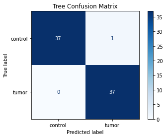
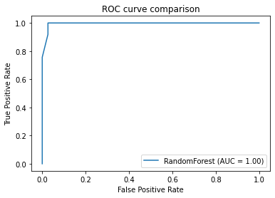

Machine Learning workflow¶
[1]:
from preprocessing import read_tpm, read_metadata
import numpy as np
import pandas as pd
from sklearn.preprocessing import MinMaxScaler
from sklearn.model_selection import train_test_split, StratifiedShuffleSplit, StratifiedKFold, GridSearchCV
# scores
from sklearn.metrics import accuracy_score, precision_score, recall_score, balanced_accuracy_score, f1_score, matthews_corrcoef
from sklearn.metrics import classification_report, confusion_matrix, make_scorer
# classifiers
from sklearn.ensemble import RandomForestClassifier
from sklearn.svm import LinearSVC
Read Data¶
[2]:
inpath = "/Users/susanne/Documents/Master/TPM_TCGA_PAAD_GTEX_pancreas.txt"
metadata = "/Users/susanne/Documents/Datasets_Metadata/new_TCGA_PAAD_metadata.csv"
sample_ids, gene_ids, feature_names, raw_data = read_tpm(inpath)
# Convert data to numpy array
data_arr = np.array(raw_data, dtype=float)
# Transpose (n_samples, n_features)
data = np.transpose(data_arr)
# METADATA
labels, target, target_names = read_metadata(metadata, sample_ids)
Split Test / Train¶
Using all features
[13]:
# Split Train and Test data (80:20)
X_train, X_test, y_train, y_test = train_test_split(data, target, test_size=0.2, random_state=42)
Feature Scaling Training data¶
[14]:
scaler = MinMaxScaler()
scaled_X_train = scaler.fit_transform(X_train)
Train 2 Classifiers: SVM, RandomForest Grid Search¶
Grid Search already performs cross validation of the training data in smaller folds.
[15]:
scorers = {'matthews': make_scorer(matthews_corrcoef),
'balanced': make_scorer(balanced_accuracy_score)}
######################################################################################################
# LINEAR SVC
svc_clf = LinearSVC()
svc_grid = [ {'C': np.linspace(0.1, 1.0, num=10)} ]
svc_search = GridSearchCV(svc_clf, svc_grid, cv=5, return_train_score=True) #, scoring=make_scorer(matthews_corrcoef)
svc_search.fit(scaled_X_train, y_train)
print("Best params: ", svc_search.best_params_)
print("Best estimator: ", svc_search.best_estimator_)
svc_cvres = pd.DataFrame.from_dict(svc_search.cv_results_)
######################################################################################################
# RANDOM FOREST
forest_clf = RandomForestClassifier()
tree_grid = [ {'n_estimators':[5, 10, 20, 50, 100], 'max_features':[5, 10, 20, 50, 100, 200, 500]} ]
tree_search = GridSearchCV(forest_clf, tree_grid, cv=5, return_train_score=True) # , scoring=make_scorer(matthews_corrcoef)
tree_search.fit(scaled_X_train, y_train)
print("Best params: ", tree_search.best_params_)
print("Best estimator: ", tree_search.best_estimator_)
# cross_val_scores available for each combination
tree_cvres = pd.DataFrame.from_dict(tree_search.cv_results_)
# extract feature importances: which genes most informative?
tree_feature_importances = tree_search.best_estimator_.feature_importances_
# print(most important features with their names)
df_tree_feature_importances = pd.DataFrame(sorted(zip(tree_feature_importances, gene_ids, feature_names), reverse=True), columns=['Feature Importance', 'Gene ID', 'Gene Name'])
df_tree_feature_importances
Best params: {'C': 0.1}
Best estimator: LinearSVC(C=0.1)
Best params: {'max_features': 500, 'n_estimators': 10}
Best estimator: RandomForestClassifier(max_features=500, n_estimators=10)
[15]:
| Feature Importance | Gene ID | Gene Name | |
|---|---|---|---|
| 0 | 0.098663 | ENSG00000171877 | FRMD5 |
| 1 | 0.098647 | ENSG00000227376 | FTH1P16 |
| 2 | 0.096065 | ENSG00000214653 | HNRNPA3P3 |
| 3 | 0.096062 | ENSG00000242262 | RP11-100N21.1 |
| 4 | 0.095996 | ENSG00000228797 | FAM207BP |
| ... | ... | ... | ... |
| 63670 | 0.000000 | ENSG00000000460 | C1orf112 |
| 63671 | 0.000000 | ENSG00000000457 | SCYL3 |
| 63672 | 0.000000 | ENSG00000000419 | DPM1 |
| 63673 | 0.000000 | ENSG00000000005 | TNMD |
| 63674 | 0.000000 | ENSG00000000003 | TSPAN6 |
63675 rows × 3 columns
[16]:
svc_cvres.iloc[:, 5:]
[16]:
| params | split0_test_score | split1_test_score | split2_test_score | split3_test_score | split4_test_score | mean_test_score | std_test_score | rank_test_score | split0_train_score | split1_train_score | split2_train_score | split3_train_score | split4_train_score | mean_train_score | std_train_score | |
|---|---|---|---|---|---|---|---|---|---|---|---|---|---|---|---|---|
| 0 | {'C': 0.1} | 1.0 | 1.0 | 1.0 | 0.966667 | 0.966102 | 0.986554 | 0.016469 | 1 | 1.0 | 1.0 | 1.0 | 1.0 | 1.0 | 1.0 | 0.0 |
| 1 | {'C': 0.2} | 1.0 | 1.0 | 1.0 | 0.966667 | 0.966102 | 0.986554 | 0.016469 | 1 | 1.0 | 1.0 | 1.0 | 1.0 | 1.0 | 1.0 | 0.0 |
| 2 | {'C': 0.30000000000000004} | 1.0 | 1.0 | 1.0 | 0.966667 | 0.966102 | 0.986554 | 0.016469 | 1 | 1.0 | 1.0 | 1.0 | 1.0 | 1.0 | 1.0 | 0.0 |
| 3 | {'C': 0.4} | 1.0 | 1.0 | 1.0 | 0.966667 | 0.966102 | 0.986554 | 0.016469 | 1 | 1.0 | 1.0 | 1.0 | 1.0 | 1.0 | 1.0 | 0.0 |
| 4 | {'C': 0.5} | 1.0 | 1.0 | 1.0 | 0.966667 | 0.966102 | 0.986554 | 0.016469 | 1 | 1.0 | 1.0 | 1.0 | 1.0 | 1.0 | 1.0 | 0.0 |
| 5 | {'C': 0.6} | 1.0 | 1.0 | 1.0 | 0.966667 | 0.966102 | 0.986554 | 0.016469 | 1 | 1.0 | 1.0 | 1.0 | 1.0 | 1.0 | 1.0 | 0.0 |
| 6 | {'C': 0.7000000000000001} | 1.0 | 1.0 | 1.0 | 0.966667 | 0.966102 | 0.986554 | 0.016469 | 1 | 1.0 | 1.0 | 1.0 | 1.0 | 1.0 | 1.0 | 0.0 |
| 7 | {'C': 0.8} | 1.0 | 1.0 | 1.0 | 0.966667 | 0.966102 | 0.986554 | 0.016469 | 1 | 1.0 | 1.0 | 1.0 | 1.0 | 1.0 | 1.0 | 0.0 |
| 8 | {'C': 0.9} | 1.0 | 1.0 | 1.0 | 0.966667 | 0.966102 | 0.986554 | 0.016469 | 1 | 1.0 | 1.0 | 1.0 | 1.0 | 1.0 | 1.0 | 0.0 |
| 9 | {'C': 1.0} | 1.0 | 1.0 | 1.0 | 0.966667 | 0.966102 | 0.986554 | 0.016469 | 1 | 1.0 | 1.0 | 1.0 | 1.0 | 1.0 | 1.0 | 0.0 |
[17]:
tree_cvres.iloc[:,6:]
[17]:
| params | split0_test_score | split1_test_score | split2_test_score | split3_test_score | split4_test_score | mean_test_score | std_test_score | rank_test_score | split0_train_score | split1_train_score | split2_train_score | split3_train_score | split4_train_score | mean_train_score | std_train_score | |
|---|---|---|---|---|---|---|---|---|---|---|---|---|---|---|---|---|
| 0 | {'max_features': 5, 'n_estimators': 5} | 1.0 | 0.983333 | 1.000000 | 0.933333 | 0.898305 | 0.962994 | 0.040539 | 35 | 1.000000 | 0.991632 | 0.991632 | 0.995816 | 1.000000 | 0.995816 | 0.003742 |
| 1 | {'max_features': 5, 'n_estimators': 10} | 1.0 | 1.000000 | 0.983333 | 0.950000 | 0.915254 | 0.969718 | 0.032786 | 33 | 1.000000 | 1.000000 | 0.991632 | 0.995816 | 0.995833 | 0.996656 | 0.003130 |
| 2 | {'max_features': 5, 'n_estimators': 20} | 1.0 | 1.000000 | 1.000000 | 0.966667 | 0.949153 | 0.983164 | 0.021351 | 4 | 0.995816 | 1.000000 | 1.000000 | 1.000000 | 1.000000 | 0.999163 | 0.001674 |
| 3 | {'max_features': 5, 'n_estimators': 50} | 1.0 | 1.000000 | 1.000000 | 0.966667 | 0.949153 | 0.983164 | 0.021351 | 4 | 1.000000 | 1.000000 | 1.000000 | 1.000000 | 1.000000 | 1.000000 | 0.000000 |
| 4 | {'max_features': 5, 'n_estimators': 100} | 1.0 | 1.000000 | 1.000000 | 0.966667 | 0.949153 | 0.983164 | 0.021351 | 4 | 1.000000 | 1.000000 | 1.000000 | 1.000000 | 1.000000 | 1.000000 | 0.000000 |
| 5 | {'max_features': 10, 'n_estimators': 5} | 1.0 | 0.983333 | 0.983333 | 0.950000 | 0.915254 | 0.966384 | 0.030290 | 34 | 0.995816 | 1.000000 | 0.987448 | 1.000000 | 0.995833 | 0.995819 | 0.004583 |
| 6 | {'max_features': 10, 'n_estimators': 10} | 1.0 | 0.966667 | 1.000000 | 0.966667 | 0.932203 | 0.973107 | 0.025308 | 31 | 1.000000 | 1.000000 | 0.995816 | 1.000000 | 1.000000 | 0.999163 | 0.001674 |
| 7 | {'max_features': 10, 'n_estimators': 20} | 1.0 | 1.000000 | 1.000000 | 0.966667 | 0.915254 | 0.976384 | 0.033180 | 29 | 1.000000 | 0.995816 | 1.000000 | 1.000000 | 1.000000 | 0.999163 | 0.001674 |
| 8 | {'max_features': 10, 'n_estimators': 50} | 1.0 | 1.000000 | 1.000000 | 0.966667 | 0.949153 | 0.983164 | 0.021351 | 4 | 1.000000 | 1.000000 | 1.000000 | 1.000000 | 1.000000 | 1.000000 | 0.000000 |
| 9 | {'max_features': 10, 'n_estimators': 100} | 1.0 | 1.000000 | 1.000000 | 0.966667 | 0.949153 | 0.983164 | 0.021351 | 4 | 1.000000 | 1.000000 | 1.000000 | 1.000000 | 1.000000 | 1.000000 | 0.000000 |
| 10 | {'max_features': 20, 'n_estimators': 5} | 1.0 | 0.983333 | 1.000000 | 0.966667 | 0.949153 | 0.979831 | 0.019699 | 21 | 0.987448 | 0.995816 | 0.995816 | 0.995816 | 0.995833 | 0.994146 | 0.003349 |
| 11 | {'max_features': 20, 'n_estimators': 10} | 1.0 | 1.000000 | 0.983333 | 0.966667 | 0.932203 | 0.976441 | 0.025338 | 26 | 1.000000 | 1.000000 | 0.991632 | 1.000000 | 1.000000 | 0.998326 | 0.003347 |
| 12 | {'max_features': 20, 'n_estimators': 20} | 1.0 | 1.000000 | 1.000000 | 0.966667 | 0.949153 | 0.983164 | 0.021351 | 4 | 1.000000 | 1.000000 | 0.995816 | 1.000000 | 1.000000 | 0.999163 | 0.001674 |
| 13 | {'max_features': 20, 'n_estimators': 50} | 1.0 | 1.000000 | 1.000000 | 0.966667 | 0.949153 | 0.983164 | 0.021351 | 4 | 1.000000 | 1.000000 | 1.000000 | 1.000000 | 1.000000 | 1.000000 | 0.000000 |
| 14 | {'max_features': 20, 'n_estimators': 100} | 1.0 | 1.000000 | 1.000000 | 0.966667 | 0.949153 | 0.983164 | 0.021351 | 4 | 1.000000 | 1.000000 | 1.000000 | 1.000000 | 1.000000 | 1.000000 | 0.000000 |
| 15 | {'max_features': 50, 'n_estimators': 5} | 1.0 | 1.000000 | 1.000000 | 0.950000 | 0.915254 | 0.973051 | 0.034787 | 32 | 0.991632 | 1.000000 | 1.000000 | 1.000000 | 0.995833 | 0.997493 | 0.003346 |
| 16 | {'max_features': 50, 'n_estimators': 10} | 1.0 | 1.000000 | 1.000000 | 0.966667 | 0.915254 | 0.976384 | 0.033180 | 29 | 1.000000 | 1.000000 | 1.000000 | 1.000000 | 1.000000 | 1.000000 | 0.000000 |
| 17 | {'max_features': 50, 'n_estimators': 20} | 1.0 | 1.000000 | 1.000000 | 0.966667 | 0.932203 | 0.979774 | 0.027063 | 24 | 1.000000 | 1.000000 | 1.000000 | 1.000000 | 1.000000 | 1.000000 | 0.000000 |
| 18 | {'max_features': 50, 'n_estimators': 50} | 1.0 | 1.000000 | 1.000000 | 0.966667 | 0.932203 | 0.979774 | 0.027063 | 24 | 1.000000 | 1.000000 | 1.000000 | 1.000000 | 1.000000 | 1.000000 | 0.000000 |
| 19 | {'max_features': 50, 'n_estimators': 100} | 1.0 | 1.000000 | 1.000000 | 0.966667 | 0.949153 | 0.983164 | 0.021351 | 4 | 1.000000 | 1.000000 | 1.000000 | 1.000000 | 1.000000 | 1.000000 | 0.000000 |
| 20 | {'max_features': 100, 'n_estimators': 5} | 1.0 | 1.000000 | 1.000000 | 0.983333 | 0.949153 | 0.986497 | 0.019757 | 3 | 1.000000 | 0.995816 | 1.000000 | 1.000000 | 1.000000 | 0.999163 | 0.001674 |
| 21 | {'max_features': 100, 'n_estimators': 10} | 1.0 | 1.000000 | 1.000000 | 0.950000 | 0.932203 | 0.976441 | 0.029398 | 26 | 0.995816 | 1.000000 | 0.991632 | 1.000000 | 0.995833 | 0.996656 | 0.003130 |
| 22 | {'max_features': 100, 'n_estimators': 20} | 1.0 | 1.000000 | 1.000000 | 0.966667 | 0.949153 | 0.983164 | 0.021351 | 4 | 1.000000 | 0.995816 | 0.995816 | 1.000000 | 1.000000 | 0.998326 | 0.002050 |
| 23 | {'max_features': 100, 'n_estimators': 50} | 1.0 | 1.000000 | 1.000000 | 0.966667 | 0.949153 | 0.983164 | 0.021351 | 4 | 1.000000 | 1.000000 | 1.000000 | 1.000000 | 1.000000 | 1.000000 | 0.000000 |
| 24 | {'max_features': 100, 'n_estimators': 100} | 1.0 | 1.000000 | 1.000000 | 0.966667 | 0.949153 | 0.983164 | 0.021351 | 4 | 1.000000 | 1.000000 | 1.000000 | 1.000000 | 1.000000 | 1.000000 | 0.000000 |
| 25 | {'max_features': 200, 'n_estimators': 5} | 1.0 | 1.000000 | 0.983333 | 0.966667 | 0.949153 | 0.979831 | 0.019699 | 21 | 1.000000 | 0.995816 | 0.991632 | 1.000000 | 0.995833 | 0.996656 | 0.003130 |
| 26 | {'max_features': 200, 'n_estimators': 10} | 1.0 | 1.000000 | 0.983333 | 0.966667 | 0.932203 | 0.976441 | 0.025338 | 26 | 1.000000 | 1.000000 | 1.000000 | 1.000000 | 1.000000 | 1.000000 | 0.000000 |
| 27 | {'max_features': 200, 'n_estimators': 20} | 1.0 | 1.000000 | 1.000000 | 0.966667 | 0.949153 | 0.983164 | 0.021351 | 4 | 1.000000 | 1.000000 | 1.000000 | 1.000000 | 1.000000 | 1.000000 | 0.000000 |
| 28 | {'max_features': 200, 'n_estimators': 50} | 1.0 | 1.000000 | 1.000000 | 0.966667 | 0.949153 | 0.983164 | 0.021351 | 4 | 1.000000 | 1.000000 | 0.995816 | 1.000000 | 1.000000 | 0.999163 | 0.001674 |
| 29 | {'max_features': 200, 'n_estimators': 100} | 1.0 | 1.000000 | 1.000000 | 0.966667 | 0.949153 | 0.983164 | 0.021351 | 4 | 1.000000 | 1.000000 | 1.000000 | 1.000000 | 1.000000 | 1.000000 | 0.000000 |
| 30 | {'max_features': 500, 'n_estimators': 5} | 1.0 | 1.000000 | 1.000000 | 0.950000 | 0.949153 | 0.979831 | 0.024704 | 21 | 0.995816 | 0.995816 | 1.000000 | 1.000000 | 1.000000 | 0.998326 | 0.002050 |
| 31 | {'max_features': 500, 'n_estimators': 10} | 1.0 | 1.000000 | 1.000000 | 0.966667 | 0.966102 | 0.986554 | 0.016469 | 1 | 1.000000 | 1.000000 | 1.000000 | 1.000000 | 1.000000 | 1.000000 | 0.000000 |
| 32 | {'max_features': 500, 'n_estimators': 20} | 1.0 | 1.000000 | 1.000000 | 0.966667 | 0.949153 | 0.983164 | 0.021351 | 4 | 1.000000 | 1.000000 | 0.995816 | 1.000000 | 0.995833 | 0.998330 | 0.002046 |
| 33 | {'max_features': 500, 'n_estimators': 50} | 1.0 | 1.000000 | 1.000000 | 0.966667 | 0.966102 | 0.986554 | 0.016469 | 1 | 1.000000 | 1.000000 | 1.000000 | 1.000000 | 1.000000 | 1.000000 | 0.000000 |
| 34 | {'max_features': 500, 'n_estimators': 100} | 1.0 | 1.000000 | 1.000000 | 0.966667 | 0.949153 | 0.983164 | 0.021351 | 4 | 1.000000 | 1.000000 | 1.000000 | 1.000000 | 1.000000 | 1.000000 | 0.000000 |
[18]:
df_tree_feature_importances.head(n=10)
[18]:
| Feature Importance | Gene ID | Gene Name | |
|---|---|---|---|
| 0 | 0.098663 | ENSG00000171877 | FRMD5 |
| 1 | 0.098647 | ENSG00000227376 | FTH1P16 |
| 2 | 0.096065 | ENSG00000214653 | HNRNPA3P3 |
| 3 | 0.096062 | ENSG00000242262 | RP11-100N21.1 |
| 4 | 0.095996 | ENSG00000228797 | FAM207BP |
| 5 | 0.093489 | ENSG00000215102 | TERF1P4 |
| 6 | 0.093420 | ENSG00000106367 | AP1S1 |
| 7 | 0.092276 | ENSG00000213757 | CTC-451P13.1 |
| 8 | 0.089732 | ENSG00000236603 | RANP1 |
| 9 | 0.089540 | ENSG00000224520 | KRT8P45 |
Evaluate Best Model on Test data¶
[19]:
######################################################################################################
# SCALE TEST DATA
scaled_X_test = scaler.transform(X_test)
######################################################################################################
# EVALUATE LINEAR SVC MODEL
svc_model = svc_search.best_estimator_
y_svc_predictions = svc_model.predict(scaled_X_test)
print(classification_report(y_test, y_svc_predictions, target_names=['normal', 'tumor']))
######################################################################################################
# EVALUATE RANDOM FOREST MODEL
tree_model = tree_search.best_estimator_
# make predictions
y_tree_predictions = tree_model.predict(scaled_X_test)
# evaluate predictions
print(classification_report(y_test, y_tree_predictions, target_names=['normal', 'tumor']))
precision recall f1-score support
normal 1.00 0.97 0.99 38
tumor 0.97 1.00 0.99 37
accuracy 0.99 75
macro avg 0.99 0.99 0.99 75
weighted avg 0.99 0.99 0.99 75
precision recall f1-score support
normal 1.00 0.97 0.99 38
tumor 0.97 1.00 0.99 37
accuracy 0.99 75
macro avg 0.99 0.99 0.99 75
weighted avg 0.99 0.99 0.99 75
[20]:
print("Matthews CorrelationCoefficient on predictions with SVC %.2f" %(matthews_corrcoef(y_test, y_svc_predictions)))
print("Matthews CorrelationCoefficient on predictions with Random Forest %.2f" %(matthews_corrcoef(y_test, y_tree_predictions)))
print("Balanced Accuracy score %.2f" %(balanced_accuracy_score(y_test, y_svc_predictions)))
print("Balanced Accuracy score %.2f" %(balanced_accuracy_score(y_test, y_tree_predictions)))
Matthews CorrelationCoefficient on predictions with SVC 0.97
Matthews CorrelationCoefficient on predictions with Random Forest 0.97
Balanced Accuracy score 0.99
Balanced Accuracy score 0.99
Confustion Matrix, ROC, AUC¶
[21]:
from sklearn.metrics import plot_confusion_matrix
from sklearn.metrics import plot_roc_curve
import matplotlib.pyplot as plt
######################################################################################################
# # EVALUATE LINEAR SVC MODEL
disp_svc = plot_confusion_matrix(svc_model, scaled_X_test, y_test,
display_labels=('control', 'tumor'),
cmap=plt.cm.Blues)
disp_svc.ax_.set_title('SVC Confusion Matrix')
print('SVC Confusion Matrix')
print(disp_svc.confusion_matrix)
######################################################################################################
# EVALUATE RANDOM FOREST MODEL
disp_tree = plot_confusion_matrix(tree_model, scaled_X_test, y_test,
display_labels=('control', 'tumor'),
cmap=plt.cm.Blues)
disp_tree.ax_.set_title('Tree Confusion Matrix')
print('Tree Confusion Matrix')
print(disp_tree.confusion_matrix)
######################################################################################################
# ROC AUC
#svc_disp = plot_roc_curve(svc_search, scaled_X_test, y_test, name='SVC')
tree_disp = plot_roc_curve(tree_search, scaled_X_test, y_test, name='RandomForest') # ax=svc_disp.ax_
plt.title("ROC curve comparison")
# tree_disp.figure_.suptitle("ROC curve comparison")
SVC Confusion Matrix
[[37 1]
[ 0 37]]
Tree Confusion Matrix
[[37 1]
[ 0 37]]
[21]:
Text(0.5, 1.0, 'ROC curve comparison')


[ ]: